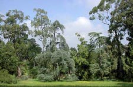
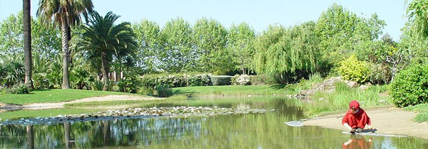
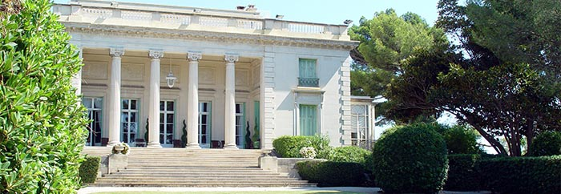

Le patrimoine contemporain - Les jardins remarquables - Les jardins publics
Dans le cadre de la politique nationale en faveur des parcs et jardins, un label «jardin remarquable» a été créé depuis 2004 par le Ministère de la Culture avec le Concours du Conseil national des parcs et jardins. Il vise à reconnaître et valoriser des parcs et jardins ouverts au public et bien entretenus. Ce label dépasse le cadre des jardins anciens, protégés ou non au titre des monuments historiques, pour inclure le champ des jardins de création récente. Les critères pris en compte pour l’attribution sont la composition, l’intégration dans le site et la qualité des abords, la présence d’éléments remarquables, l’intérêt botanique, l’intérêt historique (pour les jardins anciens seulement), la qualité de l’entretien. Parmi ces jardins figure le jardin botanique de la Villa Thuret à Antibes
LABEL JARDIN REMARQUABLE
Label 2007
Jardin botanique de la Villa Thuret - Antibes
Le jardin se situe à l’entrée du cap d’Antibes, sur une parcelle de 3,5 ha, au cœur d’une zone résidentielle prestigieuse. Il a été créé à partir de 1857 par Gustave Thuret, algologue et botaniste, qui y entreprend des essais d’acclimatation avec Edouard Bornet, à qui on doit la première classification des lichens. Leur œuvre est poursuivie par des successeurs, Charles Naudin et Georges Poirault, dont les travaux ont largement contribué à la création du paysage actuel de la Côte d’Azur. Légué à l’Etat en 1878, le jardin est géré par l’INRA depuis 1927. A la fois jardin botanique historique et arboretum, consacré à la culture expérimentale d’arbres et arbustes en pleine terre, le jardin compte 2 500 arbres et arbustes représentant 1 600 espèces surtout exotiques, originaires de pays à climat méditerranéen ou tempéré chaud. Les massifs historiques côtoient des massifs rénovés. La composition, parcourue de larges allées sinueuses, est celle des jardins de la Côte au 19e siècle. D’après Georges Sand, Gustave Thuret avait crée «un éden qui semble nager au dessus de l’immensité». Ce jardin a été labellisé «jardin remarquable» en 2007

Parc Exflora - Antibes
Le parc Exflora est un jardin public de 5 hectares, situé en limite de commune avec Golfe-Juan. Autour d’une grande oliveraie, il regroupe les différentes expressions du jardin méditerranéen, depuis la Rome antique jusqu’à l’exubérante Riviera du XIXe siècle. A l’entrée du parc, la terrasse principale, conçue dans la tradition de celles de la Renaissance italienne, offre au visiteur la vue la plus complète sur le jardin. Des jeux d’eau prolongent les bassins et fontaines installés dans l’axe de la terrasse. Tout le long de l’allée conduisant à la mer, de nombreux rosiers sont plantés, illustrant la célèbre production de roses d’Antibes. L’exubérance du jardin exotique et de la palmeraie remémore la belle époque où les jardiniers anglais, réussissaient à acclimater des végétaux fleurissant l’hiver, saison de prédilection des villégiatures princières sur la Côte d’Azur. Un peu plus loin se trouve le théâtre de verdure, inspiré de ceux des jardins italiens. Dans la tradition des jardins provençaux du XVIIIe siècle, un labyrinthe d’arbuste taillés a été recréé. Plus loin les jardins de l’Islam sont représentés avec la présence de l’orangeraie, avec au sol, un quadrillage dessiné par les canaux d’irrigation en terre cuite, comme dans la célèbre cour de la Cathédrale de Séville en Espagne. Les potagers et les vergers plantés dans l’Arsat, bénéficient d’une technique de culture en creux, en usage dans les jardins du Maroc, pour abriter du feu du soleil, et leur conserver ombre et humidité. Attenant à l’Arsat, une évocation du rhyad, cour carrée, placée au centre de la maison marocaine fréquemment décorée d’un bassin, de quelques plantations et de poteries, a été reconstituée. Le kiosque termine cet ensemble. Dans une partie du parc, le jardin d’hiver rassemble les plantes à floraison hivernale tels le mimosa ou le camélia. La Rotonde est un hommage à Ferdinand BAC, homme de lettres et créateur de jardins. Dans le prolongement de la Rotonde, le mail aux tilleuls est semblable aux mails de Provence. Le puit qui existait sur le site à l’origine a été conservé en lieu et place de la fontaine traditionnelle. Enfin l’atrium, le péristyle et le jardin pompéien rappelle une villa de la Rome antique et son jardin.

Jardins d’Eilenroc - Antibes
Connue de la haute société internationale depuis plus d’un siècle, cette demeure privée devenue fondation est maintenant un lieu de réception de la municipalité. Construit sur un rocher au milieu d’une nature quasi désertique, il aura fallu tout le talent et la patience de Jacques Greber, architecte-paysagiste pour composer et restructurer cet éden exotique de 11 hectares et lui donner toute sa splendeur. Ces jardins à la végétation luxuriante, surplombent la mer d’une trentaine de mètres et offrent un panorama sur la baie du Cap. Planté d’espèces traditionnelles du paysage méditerranéen, auxquelles s’ajoutent 3 kms de haies de pittosporums, toute une partie du parc a été reconstituée avec les éléments rencontrés traditionnellement sur les propriétés horticoles de la région d’Antibes dans les années 1920.
L’oliveraie : C’est par l’ opération «50 oliviers pour les enfants de l’an 2000» qu’a débuté la reconstitution de l’oliveraie de la Villa Eilenroc. Depuis cette date, une première huile a déjà été recueillie et mise en bouteille.
La roseraie : Sur un terrain d’environ 1650m², le potager et le petit jardin de plantes aromatiques et de fleurs à couper permettaient, à l’origine, à la maîtresse de maison, qui les entretenaient, d’enrichir l’ordinaire de la vie familiale. C’est sur cet emplacement et dans le souci de revivre la tradition et le savoir-faire horticole qui a fait d’Antibes «la capitale de la Rose» pendant des années, que la Ville a souhaité transformer ce jardin en roseraie.
L’écomusée : Quatre pièces composent l’écomusée. La première pièce est consacrée à la culture de l’olive dans la région antiboise et plus généralement méditerranéenne. La seconde offre des représentations en grand format de pressoir, d’ouvriers agricoles et de scènes de cueillette de l’olive. La troisième pièce est consacrée à la vie dans la propriété autour des années 1930. Et la dernière propose une rétrospective en textes et en images du travail des ouvriers agricoles au sein de la propriété.

Parc des Glaïeuls - Vallauris
Le Parc des Glaïeuls, futur Parc Naturel Départemental, fait partie d’un ensemble naturel, dominant le Golfe-Juan et les Iles de Lérins. Cet espace de 12 ha constitue un véritable poumon vert pour la ville de Vallauris Golde-Juan. Le parc se distingue dans le paysage par l’ampleur de ses espaces boisés.
L’intervention humaine sur cet espace a façonné le site, et est à l’origine de sa composition paysagère actuelle. Au début du XXe siècle, le site est exploité pour la culture de plantes ornementales et horticoles. En 1920, l’ensemble de la zone est exploité en pépinière, on comptait alors 400 orangers, 16 000 rosiers, 6 000 mimosas et une collection d’eucalyptus. En 1937, l’établissement horticole « Les Mimosés » reprend le site et continue à cultiver les plantes horticoles telles que le mimosa et les eucalyptus. La végétation modelée par des dizaines d’années de production horticole, crée des ambiances forestières particulières et agréables. La présence de très grands eucalyptus, alliée à d’autres espèces exotiques et buissonnantes (Mimosas, Figuiers de barbarie…) aux zones de garrigue (cistes, arbousiers…), ainsi qu’aux petits vallons coupant perpendiculairement le site, laisse apparaître une ambiance unique d’ombre et de lumière. On peut observer quelques endroits spécifiques qui font la richesse de ce site : à la limite du parc quelques petits bosquets de chênes verts et lièges, la zone des glaïeuls et frésias sauvages, la bambouseraie …. Une espèce à statut patrimonial a été remarquée, il s’agit du Palmier nain (Chamaerops humilis). Cette variété de palmiers est protégée au niveau national.
Depuis 2008, Le conservatoire du littoral est propriétaire du parc, et en a délégué la gestion au Conseil Général des alpes Maritimes. Un plan de gestion établit pour 10 ans permet de préserver ces zones d’intérêt écologique, tout en permettant en toute sécurité, de sensibiliser à moyen terme le grand public aux problématiques environnementales et à la protection de la nature. L’ouverture au public est prévue prochainement.